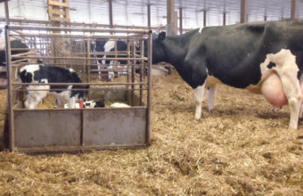
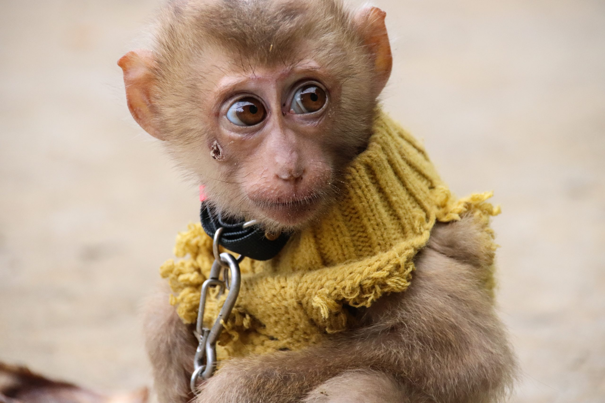
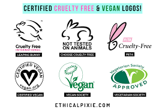
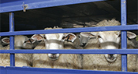
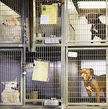
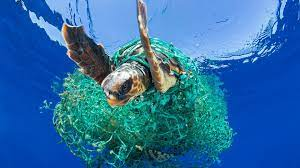

The fight for animal rights is incredibly important for our generation, along with future generations. Together, if we take the correct actions, we may be able to peacefull coexist alongside many other beautiful species for a long time.
We can all agree that the fair and humane treatment of humans is incredibly important. It's wrong to be indifferent and violent towards another human. While these beliefs are true, there seems to be exceptions. These exceptions can be found in how we treat animals. Everyday, animals are being exploited for entertainment, medicine, food, clothing, and more. As a result, their nutrition, environment, health, behavior, and mentality is severely compromised. How can we say that we as humans are a truly liberated and peaceful species when we, the so-called seekers of peace and unity are killing off other innocent species. For centuries, we have been trampling and destroying other creatures' homes, excessively preying on families, and stealing animals' offspring as pets. It is high time that we change our disastrous ways. Click on these photos to learn more.
 Claim: As humans, we should make it an obligation to fight for animal rights and take part in more sustainable practices. NOW is the time to make a change. Even if we make small tweaks to our daily routines, we will be able to lessen the suffering of so many living beings.
There are many practices that we can partake in to practice a more sustainable life. This, in turn, will benefit so many animals. One major change we can make is to buy cruelty-free products. This means that animals were not used for testing in the manufacturing of these products. Click on this photo to see a list of different brands who partake in cruelty-free practices:
Trying to eat a meatless diet for a short period of time is also a good solution. Every day, in the United States alone, about 25 million animals are slaughtered for food. Overtime, a meat free diet can greatly reduce this number. Click on this photo to see some statistics that apply to American's eating habits:
Adopting a pet from an animal shelter is a good way to ensure that your pet was produced in a humane way. Also, there are many organizations, such as the World Wildlife Fund, that make sure animals that are up for adoption are treated well. Furthermore, adopting an animal from a shelter is in many cases more humane than adopting them from a backyard breeder. Puppy mills abuse dogs by producing them in mass numbers. The living conditions of these dogs are also greatly comromised. Rescue shelters, on the other hand, tend to treat their animals with much more care and compassion. Click on this photo to learn more about why backyard breeders are incredibly inhumane:
Recycling is a big solution when it comes to protecting animals. Though we may not realize it, the carbon footprint humans leave on Earth greatly impacts the lives of so many other species. In fact, so much of the materials we use, such as plastic, end up in our planet's oceans. This is extremely detrimental for sea life. Marine animals can find themselves intangled in plastic waste, and many creatures injest poisonous toxins. By recycling, we can reduce the amount of trash that lands in our oceans, thus minimizing its threat towards animals. Click on this photo to learn more about why recycling is important:
These are just some of the many steps we can take to make this world a better place for not just ourselves, but for other species. If we start now, we will be able to live in a world with no worries of extinction caused by humans!